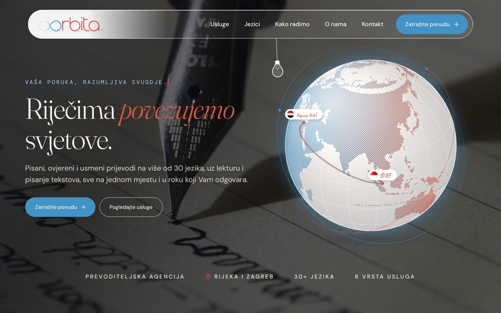
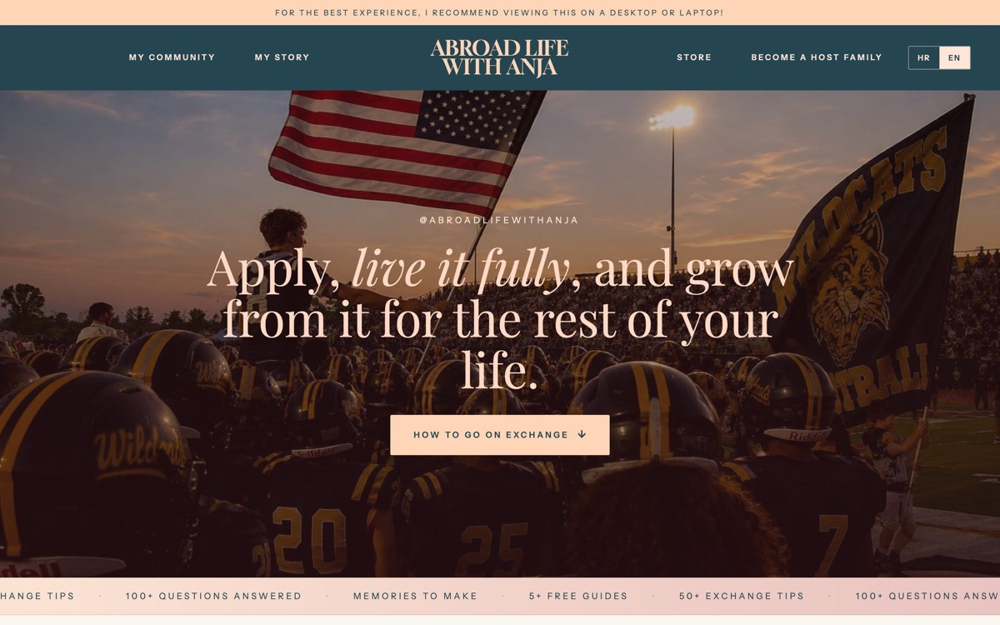
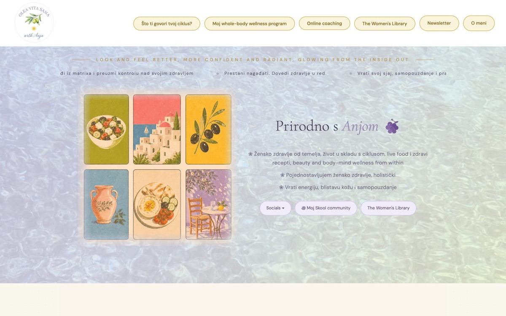
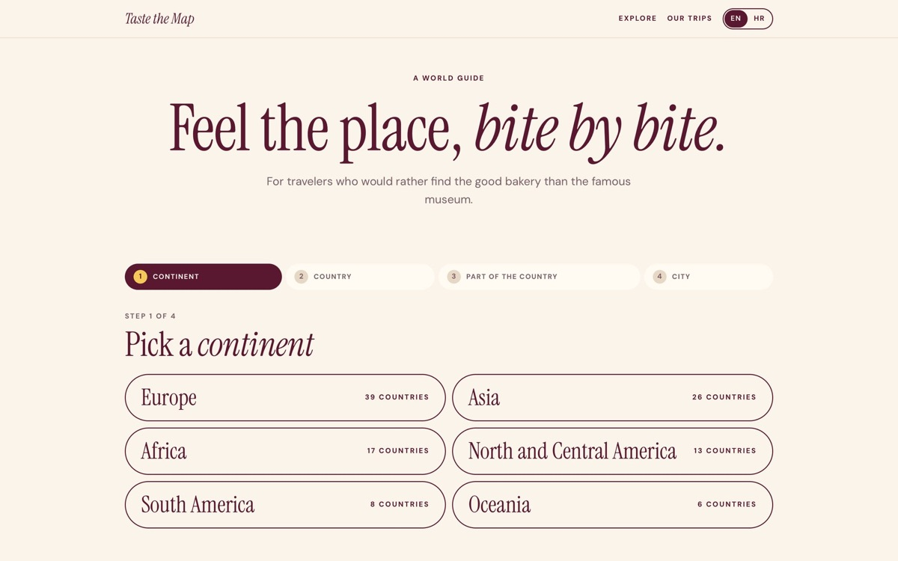
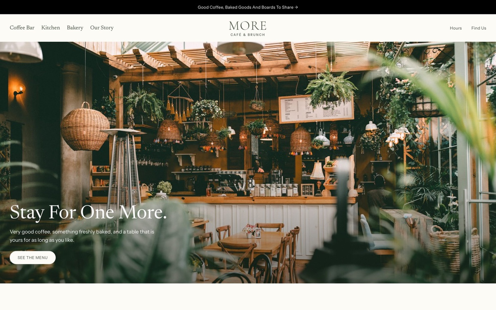

Orbita prijevodi
Nova stranica prevoditeljske agencije s interaktivnim globusom i posebnom podstranicom za svaku uslugu.
Pogledaj stranicuE-životopis
Studentica poslovne ekonomije, web dizajnerica i autorica sadržaja o razmjeni u SAD-u.
Volim stvarati, bilo rukama, bilo na ekranu. Izrađujem web stranice za male tvrtke, snimam i montiram videe za mlade koji sanjaju o razmjeni i stalno tražim nove načine da dobru ideju pretvorim u nešto lijepo i korisno.

O meni
Kreativna sam u svakom smislu, od ručnih radova do web stranica.
Treći razred srednje škole provela sam na razmjeni u malom gradu blizu Kalamazooa u Michiganu. Ta me godina naučila samostalnosti i hrabrosti, ali i tome koliko je važno znati se predstaviti, pa danas svoje iskustvo dijelim s mladima iz Hrvatske i regije koji maštaju o istom.
Studiram poslovnu ekonomiju na Ekonomskom fakultetu u Rijeci, smjer Poduzetništvo, a uz studij razvijam vlastiti posao izrade web stranica za male tvrtke i obrte. Najviše volim projekte u kojima mogu spojiti poslovno razmišljanje s kreativnošću, bilo da nešto izrađujem rukama ili na računalu.
Obrazovanje
Sveučilišni prijediplomski studij Poslovna ekonomija, smjer Poduzetništvo, izvanredni studij
Studij mi daje temelje iz ekonomije, računovodstva, statistike, prava i menadžmenta, a smjer Poduzetništvo uči me kako ideju pretvoriti u održiv posao.
Michigan, SAD · program razmjene s vizom J-1, preko agencije BHV Education
Cijelu sam školsku godinu pohađala američku srednju školu u malom gradu blizu Kalamazooa i živjela s obitelji domaćina. Naučila sam se snalaziti u potpuno novoj kulturi, steći prijatelje na drugom kontinentu i svaki dan govoriti engleski.
Iskustvo
Za male tvrtke, obrte i vlastite projekte
Dizajniram i izrađujem moderne web stranice, od prvog razgovora s klijentom do objave stranice na internetu. Za prevoditeljsku agenciju Orbita prijevodi izradila sam potpuno novu, interaktivnu stranicu s posebnom podstranicom za svaku uslugu. U radu se služim i alatima umjetne inteligencije, koji mi pomažu da brže isprobam ideje i klijentu pokažem više rješenja.
Autorica sadržaja o srednjoškolskoj razmjeni i životu u inozemstvu
Na društvenim mrežama dijelim savjete o razmjeni u SAD-u s mladima iz Hrvatske i regije, a zajednica broji oko 13 tisuća pratitelja na Instagramu. Sama snimam i montiram videe, odgovaram na pitanja pratitelja i pišem besplatne vodiče, među kojima je i detaljan vodič na hrvatskom jeziku o stipendijama, agencijama i načinima financiranja razmjene.
Radovi

Nova stranica prevoditeljske agencije s interaktivnim globusom i posebnom podstranicom za svaku uslugu.
Pogledaj stranicu
Stranica s vodičima i savjetima za učenike koji žele na razmjenu u SAD.
Pogledaj stranicu


Koncept stranice za kafić i brunch s ručno crtanim ilustracijama.
Pogledaj stranicuPortfelj
Usporedbe stranica prije i poslije, način rada i usluge koje nudim.
Otvori portfeljVještine i jezici
Hobiji
Kontakt
Za suradnju, izradu web stranice ili bilo kakvo pitanje najbrže ćete me dobiti e-mailom.